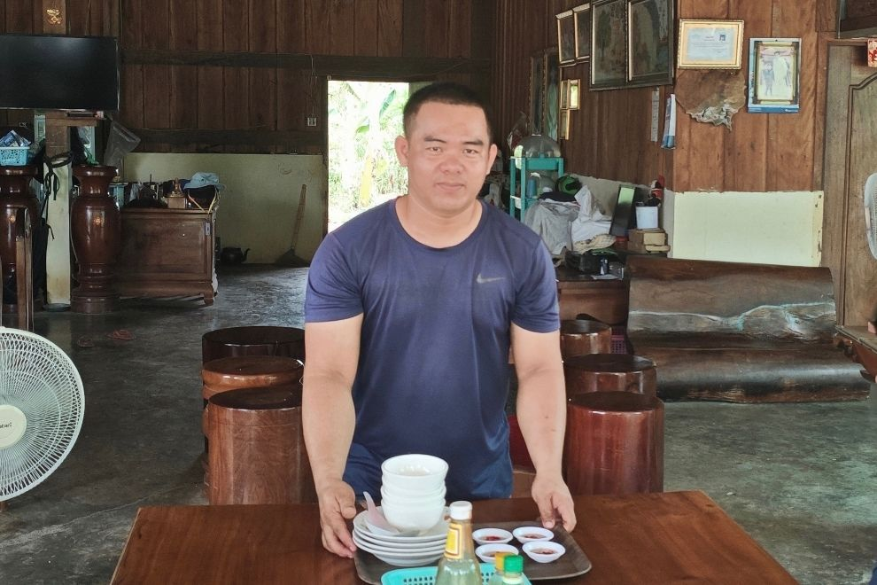
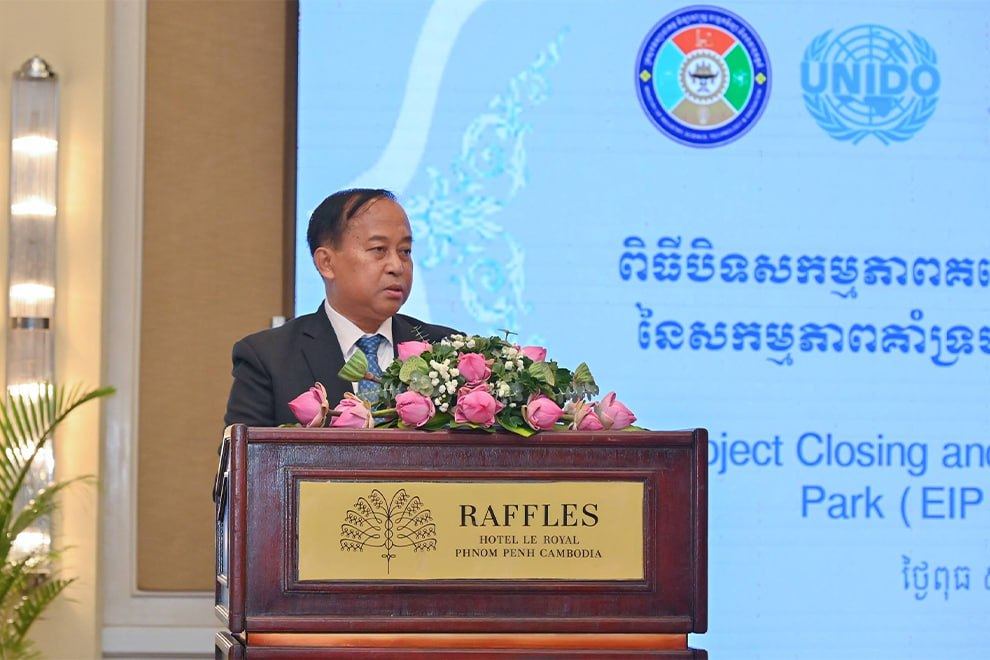

Recent News

Turkish Airlines helps expand Cambodia’s aviation sector even further
Turkish Airlines has officially launched direct flights between Istanbul (Türkiye) and Phnom Penh

From limited space to local favourite: How LOLC financing helped transform “Sromoch Khmao” restaurant
The inspiring journey of Nhein Kimheang, owner of the “Sromoch Khmao” restaurant in Veal Veng district, Pursat province

‘Light Touch’ project supports greener SEZs, more funding needed to expand programme
concluded the year-long Eco-Industrial Parks (EIP) Light Touch Activities project